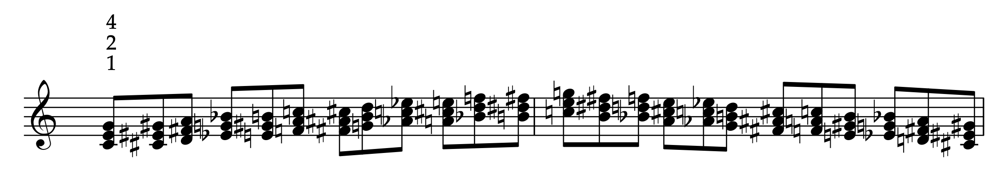

Triades majeures — chromatisme
Jouer les 12 triades majeures à partir de do, en montant chromatiquement jusqu'à l'octave, puis en redescendant.

Effectuer cet enchaînement en respectant l'ordre chromatique.
Do
Montée : Do → Do♯ → Ré → … → Si → Do ; descente : Si → Si♭ → … → Ré♭ → Do.